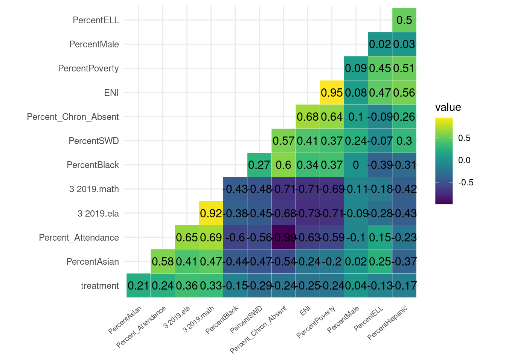

4 Part 2: Descriptive Analysis
What predicts existence of the GT option? How are covariates correlated with both the outcome and the treatment assignment?
4.0.1 Data cleaning
Using OpenData NYC, we pull aggregate K-8 attendance records and socio-economic variables for all 1125 public schools in NYC.
| DBN | School Name | ENI | % Male | % Black | %SWD | % Poverty | |
|---|---|---|---|---|---|---|---|
| 01M015 | P.S. 015 Roberto Clemente | 190 | 0.890 | 0.479 | 0.274 | 0.258 | 0.847 |
| 01M019 | P.S. 019 Asher Levy | 257 | 0.679 | 0.556 | 0.191 | 0.350 | 0.770 |
| 01M020 | P.S. 020 Anna Silver | 497 | 0.800 | 0.509 | 0.103 | 0.237 | 0.736 |
4.0.2 Visualizing the Treatment (GT option)
Treatment in each borough. 101 schools have the gifted option, 653 no gifted option

4.0.3 Raw Differences in Outcome and Covariates
| Treatment | Mean ELA | Mean Math |
|---|---|---|
| 0 | 598.71 | 598.21 |
| 1 | 608.74 | 607.88 |
## # A tibble: 10 × 5
## # Groups: borough [5]
## borough GT_option mean_ec mean_poverty total
## <chr> <chr> <dbl> <dbl> <dbl>
## 1 Bronx gifted option 0.736 0.762 779.
## 2 Bronx no gifted option 0.887 0.905 658.
## 3 Brooklyn gifted option 0.659 0.675 793.
## 4 Brooklyn no gifted option 0.785 0.802 560.
## 5 Manhattan gifted option 0.529 0.515 607.
## 6 Manhattan no gifted option 0.661 0.666 454.
## 7 Queens gifted option 0.521 0.613 900.
## 8 Queens no gifted option 0.661 0.743 709.
## 9 Staten Island gifted option 0.390 0.472 817
## 10 Staten Island no gifted option 0.578 0.629 599.## # A tibble: 6 × 5
## # Groups: school_type [4]
## school_type GT_option mean_ec mean_poverty total
## <chr> <chr> <dbl> <dbl> <dbl>
## 1 Elementary gifted option 0.587 0.632 767.
## 2 Elementary no gifted option 0.753 0.786 577.
## 3 gifted gifted option 0.097 0.056 358
## 4 K to 8 gifted option 0.633 0.676 948.
## 5 K to 8 no gifted option 0.710 0.745 703.
## 6 Middle gifted option 0.283 0.247 776.Notice that the two groups are not equal on all other factors. All of these differences between groups are statistically significant.
school_covariates <- c('ENI', 'PercentBlack', 'PercentSWD', 'PercentPoverty', 'TotalEnrollment')
small %>%
group_by(treatment) %>%
select(one_of(school_covariates)) %>%
summarise_all(funs(mean(., na.rm=T)))%>%
kable(caption = "Covariate Differences by Treatment",
col.names= c("Treatment", "ENI", "Percent Black",
"PercentSWD", "Percent Poverty", "Total Enrollment"),
digits = c(0,2,3,2,3, 3))| Treatment | ENI | Percent Black | PercentSWD | Percent Poverty | Total Enrollment |
|---|---|---|---|---|---|
| 0 | 0.74 | 0.272 | 0.22 | 0.778 | 601.813 |
| 1 | 0.57 | 0.155 | 0.16 | 0.614 | 789.921 |
4.0.4 Correlation of covariates
## [1] "DBN" "School Name" "class_option"
## [4] "3 2019.y" "4 2019.y" "5 2019.y"
## [7] "3 2019.x" "4 2019.x" "5 2019.x"
## [10] "borough" "school_type" "TotalEnrollment"
## [13] "ENI" "PercentMale" "PercentSWD"
## [16] "PercentPoverty" "PercentBlack" "PercentELL"
## [19] "PercentAsian" "PercentHispanic" "Percent_Attendance"
## [22] "Percent_Chron_Absent" "GT_option" "SC_option"
## [25] "treatment" "3 2019.ela" "3 2019.math"
4.0.5 Naive regression models (without matching)
Treatment (GT) higher ELA and Math scores
##
## Call:
## lm(formula = `3 2019.ela` ~ treatment, data = small)
##
## Residuals:
## Min 1Q Median 3Q Max
## -25.712 -6.712 -0.712 5.288 33.288
##
## Coefficients:
## Estimate Std. Error t value Pr(>|t|)
## (Intercept) 598.7121 0.3453 1733.69 <2e-16 ***
## treatment 10.0305 0.9436 10.63 <2e-16 ***
## ---
## Signif. codes: 0 '***' 0.001 '**' 0.01 '*' 0.05 '.' 0.1 ' ' 1
##
## Residual standard error: 8.825 on 752 degrees of freedom
## Multiple R-squared: 0.1306, Adjusted R-squared: 0.1295
## F-statistic: 113 on 1 and 752 DF, p-value: < 2.2e-16##
## 0 1
## 653 101##
## Call:
## lm(formula = `3 2019.math` ~ treatment, data = small)
##
## Residuals:
## Min 1Q Median 3Q Max
## -25.210 -7.210 -0.881 5.790 34.790
##
## Coefficients:
## Estimate Std. Error t value Pr(>|t|)
## (Intercept) 598.2098 0.3696 1618.454 <2e-16 ***
## treatment 9.6714 1.0099 9.577 <2e-16 ***
## ---
## Signif. codes: 0 '***' 0.001 '**' 0.01 '*' 0.05 '.' 0.1 ' ' 1
##
## Residual standard error: 9.445 on 752 degrees of freedom
## Multiple R-squared: 0.1087, Adjusted R-squared: 0.1075
## F-statistic: 91.71 on 1 and 752 DF, p-value: < 2.2e-16